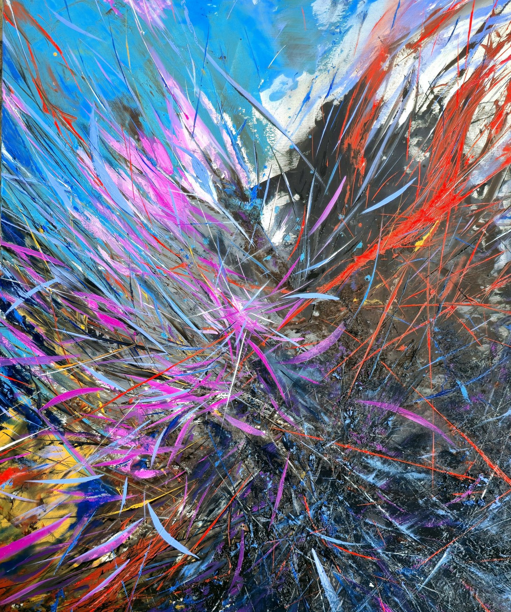
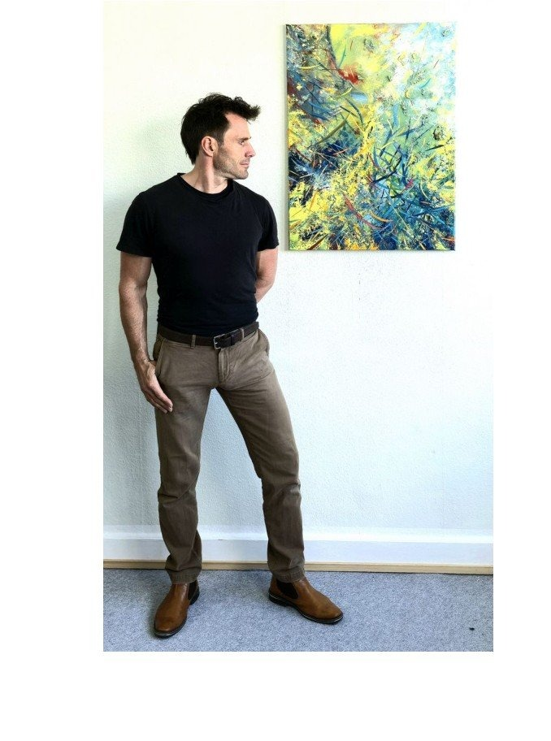
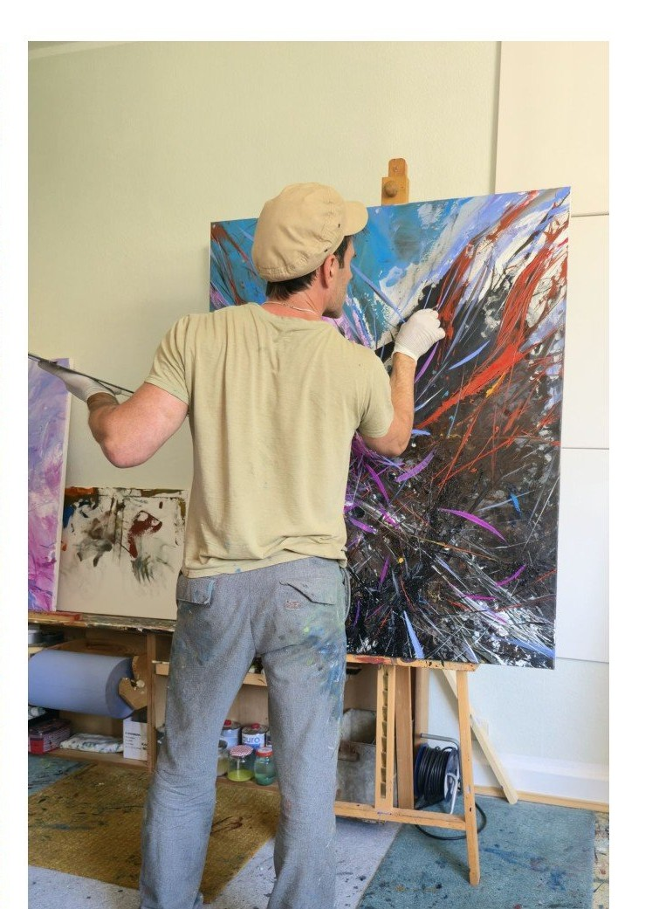

Synthetischer Expressionismus · Freiburg
Thorsten Weitz
Alles beginnt mit einem Gefühl.
Die Leinwand als Resonanzraum — innere Emotion, Energie und Transformation in Öl und Mischtechnik. Ein intensiver Dialog zwischen architektonischer Planung und unmittelbarem Impuls.

The feeling of…
Im Stil eines synthetischen Expressionismus verbindet er emotionale Energie mit kontrollierter Abstraktion. Gezielte Interventionen fangen spontane Energien auf und führen sie in ein dynamisches Gleichgewicht.
Galerie
Werke
Serie „The feeling of…“ und „Raw power and sensitivity“. Öl auf Leinwand und HDF.
Der Künstler
Atelier Freiburg
Werdegang


Ausstellungen
Ausstellungen
Sammeln
Anfrage
Werke sind auf Anfrage erhältlich. Schreiben Sie direkt, oder folgen Sie dem Atelier auf Instagram.
Instagram @wtho.artAtelier-Post
Newsletter
Erfahren Sie als Erste von neuen Werken, bevorstehenden Ausstellungen und Einblicken in das Atelier.
Der Versand erfolgt über Brevo mit Double-Opt-in gemäß Datenschutz.